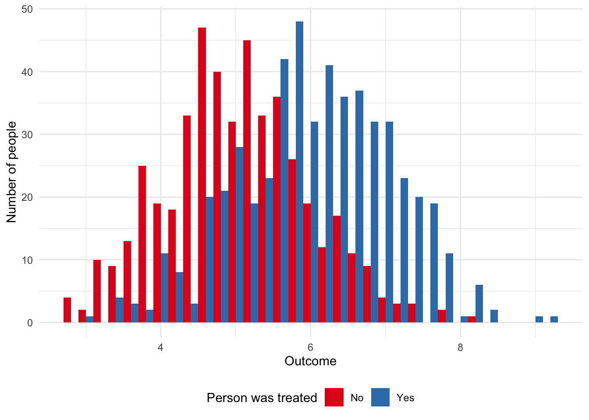
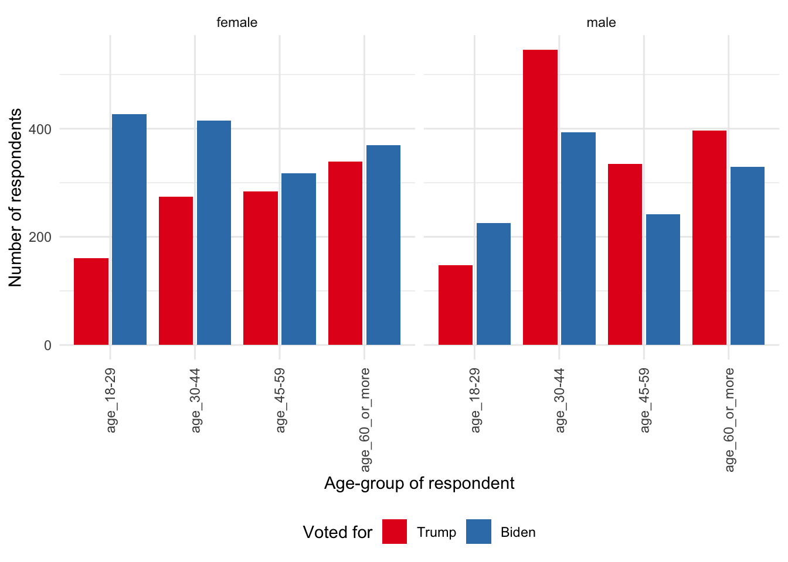
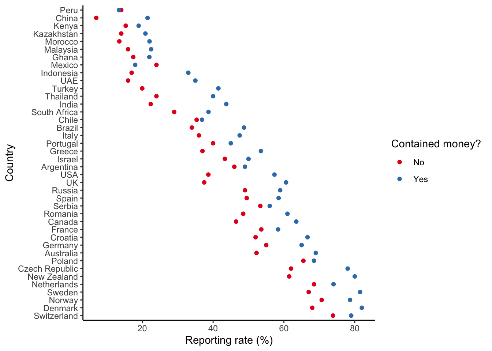
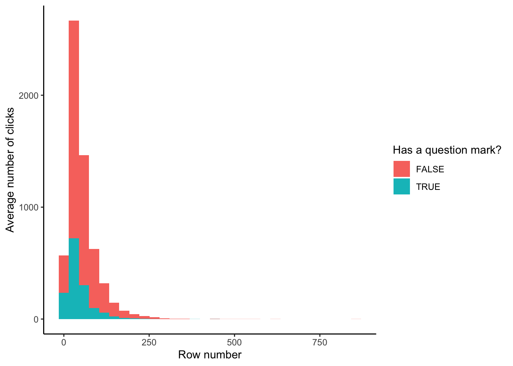

library(haven)
library(knitr)
library(labelled)
library(tidyverse)8 Hunt data
Prerequisites
- Read Impact evaluation in practice, (Gertler et al. 2016)
- Focus on Chapters 3 and 4 which provide a broad discussion of causal inference and randomization.
- Read The Psychology of Survey Response, (Tourangeau, Rips, and Rasinski 2000)
- Focus on Chapter 2 “Respondents’ Understanding of Survey Questions”, which discusses the wording of survey questions.
- Read How to Run Surveys, (Stantcheva 2023)
- This paper provides an overview of practice concerns when putting surveys together.
- Read Q&A: How Pew Research Center surveyed nearly 30,000 people in India, (Letterman 2021)
- Discusses many practical issues that occurred during a large survey about religious beliefs.
- Read Statistics and causal inference, (Holland 1986)
- Focus on Parts 1-3 which discuss how we can use statistical models, especially Rubin’s model, to understand the effect of causes.
- Read Big tech is testing you, (Fry 2020)
- This article discusses the use of A/B testing in tech firms.
- Watch Causal Inference Challenges in Industry: A perspective from experiences at LinkedIn, (Xu 2020)
- Focus on the first half of this video, which provides an overview of A/B testing.
Key concepts and skills
- Randomization is used to establish treatment and control groups. The idea is that, but for the treatment, these groups would be the same. This then allows us to measure an average effect of the treatment. But there are many threats to the validity of that estimate.
- Once we have estimates, we want to know the extent to which they apply. If they apply to only the context of the experiment, then they have internal validity. If they generalize outside of that context, then they have external validity.
- Appreciating why informed consent and establishing the need for an experiment are important.
- A/B testing and some of its nuances.
- Designing and implementing surveys.
Software and packages
- Base R (R Core Team 2023)
haven(Wickham, Miller, and Smith 2023)knitr(Xie 2023)labelled(Larmarange 2023)tidyverse(Wickham et al. 2019)
8.1 Introduction
This chapter is about obtaining data with experiments. This is a situation in which we can explicitly control and vary what we are interested in. The advantage of this is that identifying and estimating an effect should be clear. There is a treatment group that is subject to what we are interested in, and a control group that is not. These are randomly split before treatment. And so, if they end up different, then it must be because of the treatment. Unfortunately, life is rarely so smooth. Arguing about how similar the treatment and control groups were tends to carry on indefinitely. And before we can estimate an effect, we need to be able to measure whatever it is that we are interested in, which is often surprisingly difficult.
By way of motivation, consider the situation of someone who moved to San Francisco in 2014—as soon as they moved the Giants won the World Series and the Golden State Warriors began a historic streak of World Championships. They then moved to Chicago, and immediately the Cubs won the World Series for the first time in 100 years. They then moved to Massachusetts, and the Patriots won the Super Bowl again, and again, and again. And finally, they moved to Toronto, where the Raptors immediately won the World Championship. Should a city pay them to move, or could municipal funds be better spent elsewhere?
One way to get at the answer would be to run an experiment. Make a list of the North American cities with major sports teams. Then roll some dice, send them to live there for a year, and measure the outcomes of the sports teams. With enough lifetimes, we could work it out. This would take a long time because we cannot both live in a city and not live in a city. This is the fundamental problem of causal inference: a person cannot be both treated and untreated. Experiments and randomized controlled trials are circumstances in which we try to randomly allocate some treatment, to have a belief that everything else was the same (or at least ignorable). We use the Neyman-Rubin potential outcomes framework to formalize the situation (Holland 1986).
A treatment, \(t\), will often be a binary variable, that is either 0 or 1. It is 0 if the person, \(i\), is not treated, which is to say they are in the control group, and 1 if they are treated. We will typically have some outcome, \(Y_i\), of interest for that person which could be binary, categorical, multinomial, ordinal, continuous, or possibly even some other type of variable. For instance, it could be vote choice, in which case we could measure whether the person is: “Conservative” or “Not Conservative”; which party they support, say: “Conservative”, “Liberal”, “Democratic”, “Green”; or maybe a probability of supporting some particular leader.
The effect of a treatment is then causal if \((Y_i|t=0) \neq (Y_i|t=1)\). That is to say, the outcome for person \(i\), given they were not treated, is different to their outcome given they were treated. If we could both treat and control the one individual at the one time, then we would know that it was only the treatment that had caused any change in outcome. There could be no other factor to explain it. But the fundamental problem of causal inference remains: we cannot both treat and control the one individual at the one time. So, when we want to know the effect of the treatment, we need to compare it with a counterfactual. The counterfactual, introduced in Chapter 4, is what would have happened if the treated individual were not treated. As it turns out, this means one way to think of causal inference is as a missing data problem, where we are missing the counterfactual.
We cannot compare treatment and control in one individual. So we instead compare the average of two groups—those treated and those not. We are looking to estimate the counterfactual at a group level because of the impossibility of doing it at an individual level. Making this trade-off allows us to move forward but comes at the cost of certainty. We must instead rely on randomization, probabilities, and expectations.
We usually consider a default of there being no effect and we look for evidence that would cause us to change our mind. As we are interested in what is happening in groups, we turn to expectations and notions of probability to express ourselves. Hence, we will make claims that apply on average. Maybe wearing fun socks really does make you have a lucky day, but on average, across the group, it is probably not the case. It is worth pointing out that we do not just have to be interested in the average effect. We may consider the median, or variance, or whatever. Nonetheless, if we were interested in the average effect, then one way to proceed would be to:
- divide the dataset in two—treated and not treated—and have a binary effect variable—lucky day or not;
- sum the variable, then divide it by the length of the variable; and
- compare this value between the two groups.
This is an estimator, introduced in Chapter 4, which is a way of putting together a guess of something of interest. The estimand is the thing of interest, in this case the average effect, and the estimate is whatever our guess turns out to be. We can simulate data to illustrate the situation.
set.seed(853)
treat_control <-
tibble(
group = sample(x = c("Treatment", "Control"), size = 100, replace = TRUE),
binary_effect = sample(x = c(0, 1), size = 100, replace = TRUE)
)
treat_control# A tibble: 100 × 2
group binary_effect
<chr> <dbl>
1 Treatment 0
2 Control 1
3 Control 1
4 Treatment 1
5 Treatment 1
6 Treatment 0
7 Treatment 1
8 Treatment 1
9 Control 0
10 Control 0
# ℹ 90 more rowstreat_control |>
summarise(
treat_result = sum(binary_effect) / length(binary_effect),
.by = group
)# A tibble: 2 × 2
group treat_result
<chr> <dbl>
1 Treatment 0.552
2 Control 0.333In this case, we draw either 0 or 1, 100 times, for each the treatment and control group, and then the estimate of the average effect of being treated is 0.22.
More broadly, to tell causal stories we need to bring together theory and a detailed knowledge of what we are interested in (Cunningham 2021, 4). In Chapter 7 we discussed gathering data that we observed about the world. In this chapter we are going to be more active about turning the world into the data that we need. As the researcher, we will decide what to measure and how, and we will need to define what we are interested in. We will be active participants in the data-generating process. That is, if we want to use this data, then as researchers we must go out and hunt it.
In this chapter we cover experiments, especially constructing treatment and control groups, and appropriately considering their results. We go through implementing a survey. We discuss some aspects of ethical behavior in experiments through reference to the Tuskegee Syphilis Study and the Extracorporeal Membrane Oxygenation (ECMO) experiment and go through various case studies. Finally, we then turn to A/B testing, which is extensively used in industry, and consider a case study based on Upworthy data.
Ronald Fisher, the twentieth century statistician, and Francis Galton, the nineteenth century statistician, are the intellectual grandfathers of much of the work that we cover in this chapter. In some cases it is directly their work, in other cases it is work that built on their contributions. Both men believed in eugenics, amongst other things that are generally reprehensible. In the same way that art history acknowledges, say, Caravaggio as a murderer, while also considering his work and influence, so too must statistics and data science more generally concern themselves with this past, at the same time as we try to build a better future.
8.2 Field experiments and randomized controlled trials
8.2.1 Randomization
Correlation can be enough in some settings (Hill 1965), but to be able to make forecasts when things change, and circumstances are slightly different, we should try to understand causation. Economics went through a credibility revolution in the 2000s (Angrist and Pischke 2010). Economists realized previous work was not as reliable as it could be. There was increased concern with research design and use of experiments. This also happened in other social sciences, such as political science at a similar time (Druckman and Green 2021).
The key is the counterfactual: what would have happened in the absence of the treatment. Ideally, we could keep everything else constant, randomly divide the world into two groups, and treat one and not the other. Then we could be confident that any difference between the two groups was due to that treatment. The reason for this is that if we have some population and we randomly select two groups from it, then those two groups (provided they are both big enough) should have the same characteristics as the population. Randomized controlled trials (RCTs) and A/B testing attempt to get us as close to this “gold standard” as we can hope.
When we, and others such as Athey and Imbens (2017b), use such positive language to refer to these approaches, we do not mean to imply that they are perfect. Just that they can be better than most of the other options. For instance, in Chapter 14 we will consider causality from observational data, and while this is sometimes all that we can do, the circumstances in which it is possible to evaluate both makes it clear that approaches based on observational data are usually second-best (Gordon et al. 2019; Gordon, Moakler, and Zettelmeyer 2022). RCTs and A/B testing also bring other benefits, such as the chance to design a study that focuses on a particular question and tries to uncover the mechanism by which the effect occurs (Alsan and Finkelstein 2021). But they are not perfect, and the embrace of RCTs has not been unanimous (Deaton 2010).
One bedrock of experimental practice is that it be blinded, that is, a participant does not know whether they are in the treatment or control group. A failure to blind, especially with subjective outcomes, is grounds for the dismissal of an entire experiment in some disciplines (Edwards 2017). Ideally experiments should be double-blind, that is, even the researcher does not know. Stolberg (2006) discusses an early example of a randomized double-blind trial in 1835 to evaluate the effect of homeopathic drugs where neither the participants nor the organizers knew who was in which group. This is rarely the case for RCTs and A/B testing. Again, this is not to say they are not useful—after all in 1847 Semmelweis identified the benefit of having an intern wash their hands before delivering babies without a blinded study (Morange 2016, 121). Another major concern is with the extent to which the result found in the RCT generalizes to outside of that setting. There are typically few RCTs conducted over a long time, although it is possible this is changing and Bouguen et al. (2019) provide some RCTs that could be followed up on to assess long-term effects. Finally, the focus on causality has not been without cost in social sciences. Some argue that a causality-focused approach centers attention on the types of questions that it can answer at the expense of other types of questions.
8.2.2 Simulated example: cats or dogs
We hope to be able to establish treatment and control groups that are the same, but for the treatment. This means creating the control group is critical because when we do that, we establish the counterfactual. We might be worried about, say, underlying trends, which is one issue with a before-and-after comparison, or selection bias, which could occur when we allow self-selection into the treatment group. Either of these issues could result in biased estimates. We use randomization to go some way to addressing these.
To get started, we simulate a population, and then randomly sample from it. We will set it up so that half the population likes blue, and the other half likes white. And further, if someone likes blue then they almost surely prefer dogs, but if they like white then they almost surely prefer cats. Simulation is a critical part of the workflow advocated in this book. This is because we know what the outcomes should be from the analysis of simulated data. Whereas if we go straight to analyzing real data, then we do not know if unexpected outcomes are due to our own analysis errors, or actual results. Another good reason it is useful to take this approach of simulation is that when you are working in teams the analysis can get started before the data collection and cleaning is completed. The simulation will also help the collection and cleaning team think about tests they should run on their data.
set.seed(853)
num_people <- 5000
population <- tibble(
person = 1:num_people,
favorite_color = sample(c("Blue", "White"), size = num_people, replace = TRUE),
prefers_dogs = if_else(favorite_color == "Blue",
rbinom(num_people, 1, 0.9),
rbinom(num_people, 1, 0.1))
)
population |>
count(favorite_color, prefers_dogs)# A tibble: 4 × 3
favorite_color prefers_dogs n
<chr> <int> <int>
1 Blue 0 256
2 Blue 1 2291
3 White 0 2239
4 White 1 214Building on the terminology and concepts introduced in Chapter 6, we now construct a sampling frame that contains about 80 per cent of the target population.
set.seed(853)
frame <-
population |>
mutate(in_frame = rbinom(n = num_people, 1, prob = 0.8)) |>
filter(in_frame == 1)
frame |>
count(favorite_color, prefers_dogs)# A tibble: 4 × 3
favorite_color prefers_dogs n
<chr> <int> <int>
1 Blue 0 201
2 Blue 1 1822
3 White 0 1803
4 White 1 177For now, we will set aside dog or cat preferences and focus on creating treatment and control groups with favorite color only.
set.seed(853)
sample <-
frame |>
select(-prefers_dogs) |>
mutate(
group =
sample(x = c("Treatment", "Control"), size = nrow(frame), replace = TRUE
))When we look at the mean for the two groups, we can see that the proportions that prefer blue or white are very similar to what we specified (Table 8.1).
sample |>
count(group, favorite_color) |>
mutate(prop = n / sum(n),
.by = group) |>
kable(
col.names = c("Group", "Prefers", "Number", "Proportion"),
digits = 2,
format.args = list(big.mark = ",")
)| Group | Prefers | Number | Proportion |
|---|---|---|---|
| Control | Blue | 987 | 0.50 |
| Control | White | 997 | 0.50 |
| Treatment | Blue | 1,036 | 0.51 |
| Treatment | White | 983 | 0.49 |
We randomized with favorite color only. But we should also find that we took dog or cat preferences along at the same time and will have a “representative” share of people who prefer dogs to cats. We can look at our dataset (Table 8.2).
sample |>
left_join(
frame |> select(person, prefers_dogs),
by = "person"
) |>
count(group, prefers_dogs) |>
mutate(prop = n / sum(n),
.by = group) |>
kable(
col.names = c(
"Group",
"Prefers dogs to cats",
"Number",
"Proportion"
),
digits = 2,
format.args = list(big.mark = ",")
)| Group | Prefers dogs to cats | Number | Proportion |
|---|---|---|---|
| Control | 0 | 1,002 | 0.51 |
| Control | 1 | 982 | 0.49 |
| Treatment | 0 | 1,002 | 0.50 |
| Treatment | 1 | 1,017 | 0.50 |
It is exciting to have a representative share on “unobservables”. (In this case, we do “observe” them—to illustrate the point—but we did not select on them). We get this because the variables were correlated. But it will break down in several ways that we will discuss. It also assumes large enough groups. For instance, if we considered specific dog breeds, instead of dogs as an entity, we may not find ourselves in this situation. To check that the two groups are the same, we look to see if we can identify a difference between the two groups based on observables, theory, experience, and expert opinion. In this case we looked at the mean, but we could look at other aspects as well.
This would traditionally bring us to Analysis of Variance (ANOVA). ANOVA was introduced around 100 years ago by Fisher while he was working on statistical problems in agriculture. (Stolley (1991) provides additional background on Fisher.) This is less unexpected than it may seem because historically agricultural research was closely tied to statistical innovation. Often statistical methods were designed to answer agricultural questions such as “does fertilizer work?” and were only later adapted to clinical trials (Yoshioka 1998). It was relatively easily to divide a field into “treated” and “non-treated”, and the magnitude of any effect was likely to be large. While appropriate for that context, often these same statistical approaches are still taught today in introductory material, even when they are being applied in different circumstances to those they were designed for. It almost always pays to take a step back and think about what is being done and whether it is appropriate to the circumstances. We mention ANOVA here because of its importance historically. There is nothing wrong with it in the right setting. But the number of modern use-cases where it is the best option tends to be small. It might be better to build the model that underpins ANOVA ourselves, which we cover in Chapter 12.
8.2.3 Treatment and control
If the treatment and control groups are the same in all ways and remain that way, but for the treatment, then we have internal validity, which is to say that our control will work as a counterfactual and our results can speak to a difference between the groups in that study. Internal validity means that our estimates of the effect of the treatment speak to the treatment and not some other aspect. It means that we can use our results to make claims about what happened in the experiment.
If the group to which we applied our randomization were representative of the broader population, and the experimental set-up was like outside conditions, then we further could have external validity. That would mean that the difference that we find does not just apply in our own experiment, but also in the broader population. External validity means that we can use our experiment to make claims about what would happen outside the experiment. It is randomization that has allowed that to happen. In practice we would not just rely on one experiment but would instead consider that a contribution to a broader evidence-collection effort (Duflo 2020, 1955).
Shoulders of giants
Dr Esther Duflo is Abdul Latif Jameel Professor of Poverty Alleviation and Development Economics at MIT. After earning a PhD in Economics from MIT in 1999, she remained at MIT as an assistant professor, being promoted to full professor in 2003. One area of her research is economic development where she uses randomized controlled trials to understand how to address poverty. One of her most important books is Poor Economics (Banerjee and Duflo 2011). One of her most important papers is Banerjee et al. (2015) which uses randomization to examine the effect of microfinance. She was awarded the Sveriges Riksbank Prize in Economic Sciences in Memory of Alfred Nobel in 2019.
But this means we need randomization twice. Firstly, into the group that was subject to the experiment, and then secondly, between treatment and control. How do we think about this randomization, and to what extent does it matter?
We are interested in the effect of being treated. It may be that we charge different prices, which would be a continuous treatment variable, or that we compare different colors on a website, which would be a discrete treatment variable. Either way, we need to make sure that the groups are otherwise the same. How can we be convinced of this? One way is to ignore the treatment variable and to examine all other variables, looking for whether we can detect a difference between the groups based on any other variables. For instance, if we are conducting an experiment on a website, then are the groups roughly similar in terms of, say:
- Microsoft and Apple users?
- Safari, Chrome, and Firefox users?
- Mobile and desktop users?
- Users from certain locations?
Further, are the groups representative of the broader population? These are all threats to the validity of our claims. For instance, the Nationscape survey which we consider later in this chapter was concerned about the number of Firefox users who completed the survey. In the end they exclude a subset of those respondents (Vavreck and Tausanovitch 2021, 5).
When done properly, that is if the treatment is truly independent, then we can estimate the average treatment effect (ATE). In a binary treatment variable setting this is:
\[\mbox{ATE} = \mathbb{E}[Y|t=1] - \mathbb{E}[Y|t=0].\]
That is, the difference between the treated group, \(t = 1\), and the control group, \(t = 0\), when measured by the expected value of the outcome, \(Y\). The ATE becomes the difference between two conditional expectations.
To illustrate this concept, we simulate some data that shows an average difference of one between the treatment and control groups.
set.seed(853)
ate_example <-
tibble(person = 1:1000,
treated = sample(c("Yes", "No"), size = 1000, replace = TRUE)) |>
mutate(outcome = case_when(
treated == "No" ~ rnorm(n(), mean = 5, sd = 1),
treated == "Yes" ~ rnorm(n(), mean = 6, sd = 1),
))We can see the difference, which we simulated to be one, between the two groups in Figure 8.1. And we can compute the average between the groups and then the difference to see also that we roughly get back the result that we put in (Table 8.3).
ate_example |>
ggplot(aes(x = outcome, fill = treated)) +
geom_histogram(position = "dodge2", binwidth = 0.2) +
theme_minimal() +
labs(x = "Outcome",
y = "Number of people",
fill = "Person was treated") +
scale_fill_brewer(palette = "Set1") +
theme(legend.position = "bottom")
ate_example |>
summarise(mean = mean(outcome),
.by = treated) |>
kable(
col.names = c(
"Was treated?",
"Average effect"
),
digits = 2
)| Was treated? | Average effect |
|---|---|
| Yes | 6.06 |
| No | 5.03 |
Unfortunately, there is often a difference between simulated data and reality. For instance, an experiment cannot run for too long otherwise people may be treated many times or become inured to the treatment; but it cannot be too short otherwise we cannot measure longer-term outcomes. We cannot have a “representative” sample across every facet of a population, but if not, then the treatment and control may be different. Practical difficulties may make it difficult to follow up with certain groups and so we end up with a biased collection. Some questions to explore when working with real experimental data include:
- How are the participants being selected into the frame for consideration?
- How are they being selected for treatment? We would hope this is being done randomly, but this term is applied to a variety of situations. Additionally, early “success” can lead to pressure to treat everyone, especially in medical settings.
- How is treatment being assessed?
- To what extent is random allocation ethical and fair? Some argue that shortages mean it is reasonable to randomly allocate, but that may depend on how linear the benefits are. It may also be difficult to establish definitions, and the power imbalance between those making these decisions and those being treated should be considered.
Bias and other issues are not the end of the world. But we need to think about them carefully. Selection bias, introduced in Chapter 4, can be adjusted for, but only if it is recognized. For instance, how would the results of a survey about the difficulty of a university course differ if only students who completed the course were surveyed, and not those who dropped out? We should always work to try to make our dataset as representative as possible when we are creating it, but it may be possible to use a model to adjust for some of the bias after the fact. For instance, if there were a variable that was correlated with, say, attrition, then it could be added to the model either by itself, or as an interaction. Similarly, if there was correlation between the individuals. For instance, if there was some “hidden variable” that we did not know about that meant some individuals were correlated, then we could use wider standard errors. This needs to be done carefully and we discuss this further in Chapter 14. That said, if such issues can be anticipated, then it may be better to change the experiment. For instance, perhaps it would be possible to stratify by that variable.
8.2.4 Fisher’s tea party
The British are funny when it comes to tea. There is substantial, persistent, debate in Britain about how to make the perfect “cuppa” with everyone from George Orwell to John Lennon weighing in. Some say to add the milk first. Others, to add it last. YouGov, a polling company, found that most respondents put milk in last (Smith 2018). But one might wonder whether the order matters at all.
Fisher introduced an experiment designed to see if a person can distinguish between a cup of tea where the milk was added first, or last. We begin by preparing eight cups of tea: four with milk added first and the other four with milk added last. We then randomize the order of all eight cups. We tell the taster, whom we will call “Ian”, about the experimental set-up: there are eight cups of tea, four of each type, he will be given cups of tea in a random order, and his task is to group them into two groups.
One of the nice aspects of this experiment is that we can do it ourselves. There are a few things to be careful of in practice. These include:
- that the quantities of milk and tea are consistent,
- the groups are marked in some way that the taster cannot see, and
- the order is randomized.
Another nice aspect of this experiment is that we can calculate the chance that Ian is able to randomly get the groupings correct. To decide if his groupings were likely to have occurred at random, we need to calculate the probability this could happen. First, we count the number of successes out of the four that were chosen. There are: \({8 \choose 4} = \frac{8!}{4!(8-4)!}=70\) possible outcomes (Fisher [1935] 1949, 14). This notation means there are eight items in the set, and we are choosing four of them, and is used when the order of choice does not matter.
We are asking Ian to group the cups, not to identify which is which, and so there are two ways for him to be perfectly correct. He could either correctly identify all the ones that were milk-first (one outcome out of 70) or correctly identify all the ones that were tea-first (one outcome out of 70). This means the probability of this event is: \(\frac{2}{70}\), or about three per cent.
As Fisher ([1935] 1949, 15) makes clear, this now becomes a judgement call. We need to consider the weight of evidence that we require before we accept the groupings did not occur by chance and that Ian was aware of what he was doing. We need to decide what evidence it takes for us to be convinced. If there is no possible evidence that would dissuade us from the view that we held coming into the experiment, say, that there is no difference between milk-first and tea-first, then what is the point of doing an experiment? We expect that if Ian got it completely right, then the reasonable person would accept that he was able to tell the difference.
What if he is almost perfect? By chance, there are 16 ways for a person to be “off-by-one”. Either Ian thinks there was one cup that was milk-first when it was tea-first—there are, \({4 \choose 1} = 4\), four ways this could happen—or he thinks there was one cup that was tea-first when it was milk-first—again, there are, \({4 \choose 1}\) = 4, four ways this could happen. These outcomes are independent, so the probability is \(\frac{4\times 4}{70}\), or about 23 per cent. Given there is an almost 23 per cent chance of being off-by-one just by randomly grouping the teacups, this outcome probably would not convince us that Ian could tell the difference between tea-first and milk-first.
What we are looking for, in order to claim something is experimentally demonstrable is that we have come to know the features of an experiment where such a result is reliably found (Fisher [1935] 1949, 16). We need a weight of evidence rather than just one experiment. We are looking to thoroughly interrogate our data and our experiments, and to think precisely about the analysis methods we are using. Rather than searching for meaning in constellations of stars, we want to make it as easy as possible for others to reproduce our work. It is in that way that our conclusions stand a better chance of holding up in the long term.
8.2.5 Ethical foundations
The weight of evidence in medical settings can be measured in lost lives. One reason ethical practice in medical experiments developed is to prevent the unnecessary loss of life. We now detail two cases where human life may have been unnecessarily lost that helped establish foundations of ethical practice. We consider the need to obtain informed consent by discussing the Tuskegee Syphilis Study. And the need to ensure that an experiment is necessary by discussing the ECMO experiments.
8.2.5.1 Tuskegee Syphilis Study
Following Brandt (1978) and Alsan and Wanamaker (2018), the Tuskegee Syphilis Study is an infamous medical trial that began in 1932. As part of this experiment, 400 Black Americans with syphilis were not given appropriate treatment, nor even told they had syphilis, well after a standard treatment for syphilis was established and widely available. A control group, without syphilis, were also given non-effective drugs. These financially poor Black Americans in the United States South were offered minimal compensation and not told they were part of an experiment. Further, extensive work was undertaken to ensure the men would not receive treatment from anywhere, including writing to local doctors and the local health department. Even after some of the men were drafted and told to immediately get treatment, the draft board complied with a request to have the men excluded from treatment. By the time the study was stopped in 1972, more than half of the men were deceased and many of deaths were from syphilis-related causes.
The effect of the Tuskegee Syphilis Study was felt not just by the men in the study, but more broadly. Alsan and Wanamaker (2018) found that it is associated with a decrease in life expectancy at age 45 of up to 1.5 years for Black men located around central Alabama because of medical mistrust and decreased interactions with physicians. In response the United States established requirements for Institutional Review Boards and President Clinton made a formal apology in 1997. Brandt (1978, 27) says:
In retrospect the Tuskegee Study revealed more about the pathology of racism than the pathology of syphilis; more about the nature of scientific inquiry than the nature of the disease process\(\dots\) [T]he notion that science is a value-free discipline must be rejected. The need for greater vigilance in assessing the specific ways in which social values and attitudes affect professional behavior is clearly indicated.
Heller (2022) provides further background on the Tuskegee Syphilis Study.
Shoulders of giants
Dr Marcella Alsan is a Professor of Public Policy at Harvard University. She has an MD from Loyola University and earned a PhD in Economics from Harvard University in 2012. She was appointed as an assistant professor at Stanford, being promoted to full professor in 2019 when she returned to Harvard. One area of her research is health inequality, and one particularly important paper is Alsan and Wanamaker (2018), which we discussed above. She was awarded a MacArthur Foundation Fellowship in 2021.
8.2.5.2 Extracorporeal membrane oxygenation (ECMO)
Turning to the evaluation of extracorporeal membrane oxygenation (ECMO), Ware (1989) describes how they viewed ECMO as a possible treatment for persistent pulmonary hypertension in newborn children. They enrolled 19 patients and used conventional medical therapy on ten of them, and ECMO on nine of them. It was found that six of the ten in the control group survived while all in the treatment group survived. Ware (1989) used randomized consent whereby only the parents of infants randomly selected to be treated with ECMO were asked to consent.
We are concerned with “equipoise”, by which we refer to a situation in which there is genuine uncertainty about whether the treatment is more effective than conventional procedures. In medical settings even if there is initial equipoise it could be undermined if the treatment is found to be effective early in the study. Ware (1989) describes how after the results of these first 19 patients, randomization stopped and only ECMO was used. The recruiters and those treating the patients were initially not told that randomization had stopped. It was decided that this complete allocation to ECMO would continue “until either the 28th survivor or the 4th death was observed”. After 19 of 20 additional patients survived the trial was terminated. The experiment was effectively divided into two phases: in the first there was randomized use of ECMO, and in the second only ECMO was used.
One approach in these settings is a “randomized play-the-winner” rule following Wei and Durham (1978). Treatment is still randomized, but the probability shifts with each successful treatment to make treatment more likely, and there is some stopping rule. Berry (1989) argues that far from the need for a more sophisticated stopping rule, there was no need for this study of ECMO because equipoise never existed. Berry (1989) re-visits the literature mentioned by Ware (1989) and finds extensive evidence that ECMO was already known to be effective. Berry (1989) points out that there is almost never complete consensus and so one could almost always argue, inappropriately, for the existence of equipoise even in the face of a substantial weight of evidence. Berry (1989) further criticizes Ware (1989) for the use of randomized consent because of the potential that there may have been different outcomes for the infants subject to conventional medical therapy had their parents known there were other options.
The Tuskegee Syphilis Study and ECMO experiments may seem quite far from our present circumstances. While it may be illegal to do this exact research these days, it does not mean that unethical research does not still happen. For instance, we see it in machine learning applications in health and other areas; while we are not meant to explicitly discriminate and we are meant to get consent, it does not mean that we cannot implicitly discriminate without any type of consumer buy-in. For instance, Obermeyer et al. (2019) describes how many health care systems in the United States use algorithms to score the severity of how sick a patient is. They show that for the same score, Black patients are sicker, and that if Black patients were scored in the same way as White patients, then they would receive considerably more care. They find that the discrimination occurs because the algorithm is based on health care costs, rather than sickness. But because access to healthcare is unequally distributed between Black and White patients, the algorithm, however inadvertently, perpetuates racial bias.
8.3 Surveys
Having decided what to measure, one common way to get values is to use a survey. This is especially challenging, and there is an entire field—survey research—focused on it. Edelman, Vittert, and Meng (2021) make it clear that there are no new problems here, and the challenges that we face today are closely related to those that were faced in the past. There are many ways to implement surveys, and this decision matters. For some time, the only option was face-to-face surveys, where an enumerator conducted the survey in-person with the respondent. Eventually surveys began to be conducted over the telephone, again by an enumerator. One issue in both these settings was a considerable interviewer effect (Elliott et al. 2022). The internet brought a third era of survey research, characterized by low participation rates (Groves 2011). Surveys are a popular and invaluable way to get data. Face-to-face and telephone surveys are still used and have an important role to play, but many surveys are now internet-based.
There are many dedicated survey platforms, such as Survey Monkey and Qualtrics, that are largely internet-based. One especially common approach, because it is free, is to use Google Forms. In general, the focus of those platforms is enabling the user to construct and send a survey form. They typically expect the user already has contact details for some sampling frame.
Other platforms, such as Amazon Mechanical Turk, mentioned in Chapter 3, and Prolific, focus on providing respondents. When using platforms like those we should try to understand who those respondents are and how they might differ from the population of interest (Levay, Freese, and Druckman 2016; Enns and Rothschild 2022).
The survey form needs to be considered within the context of the broader research and with special concern for the respondent. Try to conduct a test of the survey before releasing it. Light, Singer, and Willett (1990, 213), in the context of studies to evaluate higher education, say that there is no occasion in which a pilot study will not bring improvements, and that they are almost always worth it. In the case of surveys, we go further. If you do not have the time, or budget, to test a survey then it might be better to re-consider whether the survey should be done.
Try to test the wording of a survey (Tourangeau, Rips, and Rasinski 2000, 23). When designing the survey, we need to have survey questions that are conversational and flow from one to the next, grouped within topics (Elson 2018). But we should also consider the cognitive load that we place on the respondent, and vary the difficulty of the questions.
When designing a survey, the critical task is to keep the respondent front-of-mind (Dillman, Smyth, and Christian [1978] 2014, 94). Drawing on Swain (1985), all questions need to be relevant and able to be answered by the respondent. The wording of the questions should be based on what the respondent would be comfortable with. The decision between different question types turns on minimizing both error and the burden that we impose on the respondent. In general, if there are a small number of clear options then multiple-choice questions are appropriate. In that case, the responses should usually be mutually exclusive and collectively exhaustive. If they are not mutually exclusive, then this needs to be signaled in the text of the question. It is also important that units are specified, and that standard concepts are used, to the extent possible.
Open text boxes may be appropriate if there are many potential answers. This will increase both the time the respondent spends completing the survey and the time it will take to analyze the answers. Only ask one question at a time and try to ask questions in a neutral way that does not lead to one particular response. Testing the survey helps avoid ambiguous or double-barreled questions, which could confuse respondents. The subject matter of the survey will also affect the appropriate choice of question type. For instance, potentially “threatening” topics may be better considered with open-ended questions (Blair et al. 1977).
All surveys need to have an introduction that specifies a title for the survey, who is conducting it, their contact details, and the purpose. It should also include a statement about the confidentiality protections that are in place, and any ethics review board clearances that were obtained.
When doing surveys, it is critical to ask the right person. For instance, Lichand and Wolf (2022) consider child labor. The extent of child labor is typically based on surveys of parents. When children were surveyed a considerable under-reporting by parents was found.
One aspect of particular concern is questions about sexual orientation and gender identity. While this is an evolving area, The White House (2023) provides recommendations for best practice, such as considering how the data will be used, and ensuring sufficient sample size. With regard to asking about sexual orientation they recommend the following question:
- “Which of the following best represents how you think of yourself?”
- “Gay or lesbian”
- “Straight, that is not gay or lesbian”
- “Bisexual”
- “I use a different term [free-text]”
- “I don’t know”
And with regard to gender, they recommend a multi-question approach:
- “What sex were you assigned at birth, on your original birth certificate?”
- “Female”
- “Male”
- “How do you currently describe yourself (mark all that apply)?”
- “Female”
- “Male”
- “Transgender”
- “I use a different term [free-text]”
Again, this is an evolving area and best practice is likely to change.
Finally, returning to the reason for doing surveys in the first place, while doing all this, it is important to also keep what we are interested in measuring in mind. Check that the survey questions relate to the estimand.
8.3.1 Democracy Fund Voter Study Group
As an example of survey data, we will consider the Democracy Fund Voter Study Group Nationscape dataset (Tausanovitch and Vavreck 2021). This is a large series of surveys conducted between July 2019 and January 2021. It is weighted on a number of variables including: gender, major census regions, race, Hispanic ethnicity, household income, education, and age. Holliday et al. (2021) describe it as a convenience sample, which was introduced in Chapter 6, based on demographics. In this case, Holliday et al. (2021) detail how the sample was provided by Lucid, who operate an online platform for survey respondents, based on certain demographic quotas. Holliday et al. (2021) found that results are similar to government and commercial surveys.
To get the dataset, go to the Democracy Fund Voter Study Group website, then look for “Nationscape” and request access to the data. This could take a day or two. After getting access, focus on the “.dta” files. Nationscape conducted many surveys in the lead-up to the 2020 United States election, so there are many files. The filename is the reference date, where “ns20200625” refers to 25 June 2020. That is the file that we use here, but many of them are similar. We download and save it as “ns20200625.dta”.
As introduced in Online Appendix A, we can import “.dta” files after installing haven and labelled. The code that we use to import and prepare the survey dataset is based on that of Mitrovski, Yang, and Wankiewicz (2020).
raw_nationscape_data <-
read_dta("ns20200625.dta")# The Stata format separates labels so reunite those
raw_nationscape_data <-
to_factor(raw_nationscape_data)
# Just keep relevant variables
nationscape_data <-
raw_nationscape_data |>
select(vote_2020, gender, education, state, age)nationscape_data# A tibble: 6,479 × 5
vote_2020 gender education state age
* <fct> <fct> <fct> <chr> <dbl>
1 Donald Trump Female Associate Degree WI 49
2 I am not sure/don't know Female College Degree (such as B.A., B.… VA 39
3 Donald Trump Female College Degree (such as B.A., B.… VA 46
4 Donald Trump Female High school graduate TX 75
5 Donald Trump Female High school graduate WA 52
6 I would not vote Female Other post high school vocationa… OH 44
7 Joe Biden Female Completed some college, but no d… MA 21
8 Joe Biden Female Completed some college, but no d… TX 38
9 Donald Trump Female Completed some college, but no d… CA 69
10 Donald Trump Female College Degree (such as B.A., B.… NC 59
# ℹ 6,469 more rowsAt this point we want to clean up a few issues. For instance, for simplicity, remove anyone not voting for Trump or Biden.
nationscape_data <-
nationscape_data |>
filter(vote_2020 %in% c("Joe Biden", "Donald Trump")) |>
mutate(vote_biden = if_else(vote_2020 == "Joe Biden", 1, 0)) |>
select(-vote_2020)We then want to create some variables of interest.
nationscape_data <-
nationscape_data |>
mutate(
age_group = case_when(
age <= 29 ~ "18-29",
age <= 44 ~ "30-44",
age <= 59 ~ "45-59",
age >= 60 ~ "60+",
TRUE ~ "Trouble"
),
gender = case_when(
gender == "Female" ~ "female",
gender == "Male" ~ "male",
TRUE ~ "Trouble"
),
education_level = case_when(
education %in% c(
"3rd Grade or less",
"Middle School - Grades 4 - 8",
"Completed some high school",
"High school graduate"
) ~ "High school or less",
education %in% c(
"Other post high school vocational training",
"Completed some college, but no degree"
) ~ "Some post sec",
education %in% c(
"Associate Degree",
"College Degree (such as B.A., B.S.)",
"Completed some graduate, but no degree"
) ~ "Post sec +",
education %in% c("Masters degree",
"Doctorate degree") ~ "Grad degree",
TRUE ~ "Trouble"
)
) |>
select(-education,-age)We will draw on this dataset in Chapter 15, so we will save it.
write_csv(x = nationscape_data,
file = "nationscape_data.csv")We can also have a look at some of the variables (Figure 8.2).
nationscape_data |>
mutate(supports = if_else(vote_biden == 1, "Biden", "Trump")) |>
mutate(supports = factor(supports, levels = c("Trump", "Biden"))) |>
ggplot(mapping = aes(x = age_group, fill = supports)) +
geom_bar(position = "dodge2") +
theme_minimal() +
labs(
x = "Age-group of respondent",
y = "Number of respondents",
fill = "Voted for"
) +
facet_wrap(vars(gender)) +
guides(x = guide_axis(angle = 90)) +
theme(legend.position = "bottom") +
scale_fill_brewer(palette = "Set1")
8.4 RCT examples
8.4.1 The Oregon Health Insurance Experiment
In the United States, unlike many developed countries, basic health insurance is not necessarily available to all residents, even those on low incomes. The Oregon Health Insurance Experiment involved low-income adults in Oregon, a state in the northwest of the United States, from 2008 to 2010 (Finkelstein et al. 2012).
Shoulders of giants
Dr Amy Finkelstein is John & Jennie S. Macdonald Professor of Economics at MIT. After earning a PhD in Economics from MIT in 2001, she was a Junior Fellow at the Harvard Society of Fellows, before returning to MIT as an assistant professor in 2005, being promoted to full professor in 2008. One area of her research is health economics where she uses randomized controlled trials to understand insurance. She was one of the lead researchers on Finkelstein et al. (2012) which examined the Oregon Health Insurance Experiment. She was awarded the John Bates Clark Medal in 2012 and a MacArthur Foundation Fellowship in 2018.
Oregon funded 10,000 places in the state-run Medicaid program, which provides health insurance for people with low incomes. A lottery was used to allocate these places, and this was judged fair because it was expected, correctly as it turned out, that demand for places would exceed the supply. In the end, 89,824 individuals signed up.
The draws were conducted over a six-month period and 35,169 individuals were selected (the household of those who won the draw were given the opportunity) but only 30 per cent of them turned out to be eligible and completed the paperwork. The insurance lasted indefinitely. This random allocation of insurance allowed the researchers to understand the effect of health insurance.
The reason that this random allocation is important is that it is not usually possible to compare those with and without insurance because the type of people that sign up to get health insurance differ to those who do not. That decision is “confounded” with other variables and results in selection bias.
As the opportunity to apply for health insurance was randomly allocated, the researchers were able to evaluate the health and earnings of those who received health insurance and compare them to those who did not. To do this they used administrative data, such as hospital discharge data, matched credit reports, and, uncommonly, mortality records. The extent of this data is limited and so they also conducted a survey.
The specifics of this are not important, and we will have more to say in Chapter 12, but they estimate the model:
\[ y_{ihj} = \beta_0 + \beta_1\mbox{Lottery} + X_{ih}\beta_2 + V_{ih}\beta_3 + \epsilon_{ihj} \tag{8.1}\]
Equation 8.1 explains various \(j\) outcomes (such as health) for an individual \(i\) in household \(h\) as a function of an indicator variable as to whether household \(h\) was selected by the lottery. It is the \(\beta_1\) coefficient that is of particular interest. That is the estimate of the mean difference between the treatment and control groups. \(X_{ih}\) is a set of variables that are correlated with the probability of being treated. These adjust for that impact to a certain extent. An example of that is the number of individuals in a household. And finally, \(V_{ih}\) is a set of variables that are not correlated with the lottery, such as demographics and previous hospital discharges.
Like earlier studies such as Brook et al. (1984), Finkelstein et al. (2012) found that the treatment group used more health care including both primary and preventive care as well as hospitalizations but had lower out-of-pocket medical expenditures. More generally, the treatment group reported better physical and mental health.
8.4.2 Civic Honesty Around The Globe
Trust is not something that we think regularly about, but it is fundamental to most interactions, both economic and personal. For instance, many people get paid after they do some work—they are trusting their employer will make good, and vice versa. If you get paid in advance, then they are trusting you. In a strictly naive, one-shot, world without transaction costs, this does not make sense. If you get paid in advance, the incentive is for you to take the money and run in the last pay period before you quit, and through backward induction everything falls apart. We do not live in such a world. For one thing there are transaction costs, for another, generally, we have repeated interactions, and finally, the world usually ends up being fairly small.
Understanding the extent of honesty in different countries may help us to explain economic development and other aspects of interest such as tax compliance, but it is hard to measure. We cannot ask people how honest they are—the liars would lie, resulting in a lemons problem (Akerlof 1970). This is a situation of adverse selection, where the liars know they are liars, but others do not. To get around this Cohn et al. (2019a) conduct an experiment in 355 cities across 40 countries where they “turned in” a wallet that was either empty or contained the local equivalent of US$13.45. They were interested in whether the “recipient” attempted to return the wallet. They found that generally wallets with money were more likely to be returned (Cohn et al. 2019a, 1).
In total Cohn et al. (2019a) “turn in” 17,303 wallets to various institutions including banks, museums, hotels, and police stations. The importance of such institutions to an economy is well accepted (Acemoglu, Johnson, and Robinson 2001) and they are common across most countries. Importantly, for the experiment, they usually have a reception area where the wallet could be turned in (Cohn et al. 2019a, 1).
In the experiment a research assistant turned in the wallet to an employee at the reception area, using a set form of words. The research assistant had to note various features of the setting, such as the gender, age-group, and busyness of the “recipient”. The wallets were transparent and contained a key, a grocery list, and a business card with a name and email address. The outcome of interest was whether an email was sent to the unique email address on the business card in the wallet. The grocery list was included to signal that the owner of the wallet was a local. The key was included as something that was only useful to the owner of the wallet, and never the recipient, in contrast to the cash, to adjust for altruism. The language and currency were adapted to local conditions.
The primary treatment in the experiment is whether the wallet contained money or not. The key outcome was whether the wallet was attempted to be returned or not. It was found that the median response time was 26 minutes, and that if an email was sent then it usually happened within a day (Cohn et al. 2019b, 10).
Using the data for the paper that is made available (Cohn 2019) we can see that considerable differences were found between countries (Figure 8.3). In almost all countries wallets with money were more likely to be returned than wallets without. The experiments were conducted across 40 countries, which were chosen based on them having enough cities with populations of at least 100,000, as well as the ability for the research assistants to safely visit and withdraw cash. Within those countries, the cities were chosen starting with the largest ones and there were usually 400 observations in each country (Cohn et al. 2019b, 5). Cohn et al. (2019a) further conducted the experiment with the equivalent of US$94.15 in three countries—Poland, the UK, and the US—and found that reporting rates further increased.

In addition to the experiments, Cohn et al. (2019a) conducted surveys that allowed them to understand some reasons for their findings. During the survey, participants were given one of the scenarios and then asked to answer questions. The use of surveys also allowed them to be specific about the respondents. The survey involved 2,525 respondents (829 in the UK, 809 in Poland, and 887 in the US) (Cohn et al. 2019b, 36). Participants were chosen using attention checks and demographic quotas based on age, gender, and residence, and they received US$4.00 for their participation (Cohn et al. 2019b, 36). The survey did not find that larger rewards were expected for turning in a wallet with more money. But it did find that failure to turn in a wallet with more money caused the respondent to feel more like they had stolen money.
8.5 A/B testing
The past two decades have probably seen the most experiments ever run, likely by several orders of magnitude. This is because of the extensive use of A/B testing at tech firms (Kohavi et al. 2012). For a long time decisions such as what font to use were based on the Highest Paid Person’s Opinion (HIPPO) (Christian 2012). These days, many large tech companies have extensive infrastructure for experiments. They term them A/B tests because of the comparison of two groups: one that gets treatment A and the other that either gets treatment B or does not see any change (Salganik 2018, 185). We could additionally consider more than two options at which point we typically use the terminology of “arms” of the experiment.
The proliferation of experiments in the private sector has brought with it a host of ethical concerns. Some private companies do not have ethical review boards, and there are different ethical concerns in the private sector compared with academia. For instance, many A/B tests are designed, explicitly, to make a consumer more likely to spend money. While society may not generally have a concern with that in the case of an online grocery retailer, society may have a problem in the case of an online gambling website. More extensive legislation and the development of private-sector ethical best practice are both likely as the extent of experimentation in the private sector becomes better known.
Every time you are online you are probably subject to tens, hundreds, or potentially thousands, of different A/B tests. While, at their heart, they are just experiments that use sensors to measure data that need to be analyzed, they have many special features that are interesting in their own light. For instance, Kohavi, Tang, and Xu (2020, 3) discuss the example of Microsoft’s search engine Bing. They used A/B testing to examine how to display advertisements. Based on these tests they ended up lengthening the title on the advertisement. They found this caused revenue to increase by 12 per cent, or around $100 million annually, without any significant measured trade-off.
In this book we use the term A/B test to refer to the situation in which we primarily implement an experiment through a technology stack about something that is primarily of the internet, such as a change to a website or similar and measured with sensors rather than a survey. While at their heart they are just experiments, A/B tests have a range of specific concerns. Bosch and Revilla (2022) detail some of these from a statistical perspective. There is something different about doing tens of thousands of small experiments all the time, compared with the typical RCT set-up of conducting one experiment over the course of months.
RCTs are often, though not exclusively, done in academia or by government agencies, but much of A/B testing occurs in industry. This means that if you are in industry and want to introduce A/B testing to your firm there can be aspects such as culture and relationship building that become important. It can be difficult to convince a manager to run an experiment. Indeed, sometimes it can be easier to experiment by not delivering, or delaying, a change that has been decided to create a control group rather than a treatment group (Salganik 2018, 188). Sometimes the most difficult aspect of A/B testing is not the analysis, it is the politics. This is not unique to A/B testing and, for instance, looking at the history of biology, we see that even aspects such as germ theory were not resolved by experiment, but instead by ideology and social standing (Morange 2016, 124).
Following Kohavi, Tang, and Xu (2020, 153), when conducting A/B testing, as with all experiments, we need to be concerned with delivery. In the case of an experiment, it is usually clear how it is being delivered. For instance, we may have the person come to a doctor’s clinic and then inject them with either a drug or a placebo. But in the case of A/B testing, it is less obvious. For instance, should we make a change to a website, or to an app? This decision affects our ability to both conduct the experiment and to gather data from it. (Urban, Sreenivasan, and Kannan (2016) provide an overview of A/B testing at Netflix, assuming an app is installed on a PlayStation 4.)
It is relatively easy and normal to update a website all the time. This means that small changes can be easily implemented if the A/B test is delivered that way. But in the case of an app, conducting an A/B test becomes a bigger deal. For instance, the release may need to go through an app store, and so would need to be part of a regular release cycle. There is also a selection concern: some users will not update the app and it is possible they are different to those that do regularly update the app.
The delivery decision also affects our ability to gather data from the A/B test. A website change is less of a big deal because we get data from a website whenever a user interacts with it. But in the case of an app, the user may use the app offline or with limited data upload which can add complications.
We need to plan! For instance, results are unlikely to be available the day after a change to an app, but they could be available the day after a change to a website. Further, we may need to consider our results in the context of different devices and platforms, potentially using, say, regression which will be covered in Chapter 12.
The second aspect of concern, as introduced in Chapter 6, is instrumentation. When we conduct a traditional experiment we might, for instance, ask respondents to fill out a survey. But this is usually not done with A/B testing. Instead we usually use various sensors (Kohavi, Tang, and Xu 2020, 162). One approach is to use cookies but different types of users will clear these at different rates. Another approach is to force the user to download a tiny image from a server, so that we know when they have completed some action. For instance, this is commonly used to track whether a user has opened an email. But again different types of users will block these at different rates.
The third aspect of concern is what are we randomizing over (Kohavi, Tang, and Xu 2020, 166)? In the case of traditional experiments, this is often a person, or sometimes various groups of people. But in the case of A/B testing it can be less clear. For instance, are we randomizing over the page, the session, or the user?
To think about this, let us consider color. For instance, say we are interested in whether we should change our logo from red to blue on the homepage. If we are randomizing at the page level, then if the user goes to some other page of our website, and then back to the homepage, the logo could change colors. If we are randomizing at the session level, then it could be blue while they use the website this time, if they close it and come back, then it could be red. Finally, if we are randomizing at a user level then possibly it would always be red for one user, but always blue for another.
The extent to which this matters depends on a trade-off between consistency and importance. For instance, if we are A/B testing product prices then consistency is likely an important feature. But if we are A/B testing background colors then consistency might not be as important. On the other hand, if we are A/B testing the position of a log-in button then it might be important that we not move that around too much for the one user, but between users it might matter less.
In A/B testing, as in traditional experiments, we are concerned that our treatment and control groups are the same, but for the treatment. In the case of traditional experiments, we satisfy ourselves of this by conducting analysis based on the data that we have after the experiment is conducted. That is usually all we can do because it would be weird to treat or control both groups. But in the case of A/B testing, the pace of experimentation allows us to randomly create the treatment and control groups, and then check, before we subject the treatment group to the treatment, that the groups are the same. For instance, if we were to show each group the same website, then we would expect the same outcomes across the two groups. If we found different outcomes then we would know that we may have a randomization issue (Taddy 2019, 129). This is termed an A/A test and was mentioned in Chapter 4.
We usually run A/B tests not because we desperately care about the specific outcome, but because that feeds into some other measure that we care about. For instance, do we care whether the website is quite-dark-blue or slightly-dark-blue? Probably not. We probably actually care a lot about the company share price. But what if the A/B test outcome of what is the best blue comes at a cost to the share price?
To illustrate this, pretend that we work at a food delivery app, and we are concerned with driver retention. Say we do some A/B tests and find that drivers are always more likely to be retained when they can deliver food to the customer faster. Our hypothetical finding is that faster is better, for driver retention, always. But one way to achieve faster deliveries is for the driver to not put the food into a hot box that would maintain the food’s temperature. Something like that might save 30 seconds, which is significant on a ten-minute delivery. Unfortunately, although we would decide to encourage that based on A/B tests designed to optimize driver-retention, such a decision would likely make the customer experience worse. If customers receive cold food that is meant to be hot, then they may stop using the app, which would be bad for the business. Chen et al. (2022) describe how they found a similar situation at Facebook in terms of notifications—although reducing the number of notifications reduced user engagement in the short-term, over the long-term it increased both user satisfaction and app usage.
This trade-off could become known during the hypothetical driver experiment if we were to look at customer complaints. It is possible that on a small team the A/B test analyst would be exposed to those tickets, but on a larger team they may not be. Ensuring that A/B tests are not resulting in false optimization is especially important. This is not something that we typically have to worry about in normal experiments. As another example of this Aprameya (2020) describes testing a feature of Duolingo, a language-learning application, which served an ad for Duolingo Plus when a regular Duolingo user was offline. The feature was found to be positive for Duolingo’s revenue, but negative for customer learning habits. Presumably enough customer negativity would eventually have resulted in the feature having a negative effect on revenue. Related to this, we want to think carefully about the nature of the result that we expect. For instance, in the shades of blues example, we are unlikely to find substantial surprises, and so it might be sufficient to try a small range of blues. But what if we considered a wider variety of colors?
Shoulders of giants
Dr Susan Athey is the Economics of Technology Professor at Stanford University. After earning a PhD in Economics from Stanford in 1995, she joined MIT as an assistant professor, returning to Stanford in 2001, where she was promoted to full professor in 2004. One area of her research is applied economics, and one particularly important paper is Abadie et al. (2017), which considers when standard errors need to be clustered. Another is Athey and Imbens (2017a), which considers how to analyze randomized experiments. In addition to her academic appointments, she has worked at Microsoft and other technology firms and been extensively involved in running experiments in this context. She was awarded the John Bates Clark Medal in 2007.
8.5.1 Upworthy
The trouble with much of A/B testing is that it is done by private firms and so we typically do not have access to their datasets. But Matias et al. (2021) provide access to a dataset of A/B tests from Upworthy, a media website that used A/B testing to optimize their content. Fitts (2014) provides more background information about Upworthy. And the datasets of A/B tests are available here.
We can look at what the dataset looks like and get a sense for it by looking at the names and an extract.
upworthy <- read_csv("https://osf.io/vy8mj/download")upworthy |>
names() [1] "...1" "created_at" "updated_at"
[4] "clickability_test_id" "excerpt" "headline"
[7] "lede" "slug" "eyecatcher_id"
[10] "impressions" "clicks" "significance"
[13] "first_place" "winner" "share_text"
[16] "square" "test_week" upworthy |>
head()# A tibble: 6 × 17
...1 created_at updated_at clickability_test_id excerpt
<dbl> <dttm> <dttm> <chr> <chr>
1 0 2014-11-20 06:43:16 2016-04-02 16:33:38 546d88fb84ad38b2ce000024 Things…
2 1 2014-11-20 06:43:44 2016-04-02 16:25:54 546d88fb84ad38b2ce000024 Things…
3 2 2014-11-20 06:44:59 2016-04-02 16:25:54 546d88fb84ad38b2ce000024 Things…
4 3 2014-11-20 06:54:36 2016-04-02 16:25:54 546d902c26714c6c44000039 Things…
5 4 2014-11-20 06:54:57 2016-04-02 16:31:45 546d902c26714c6c44000039 Things…
6 5 2014-11-20 06:55:07 2016-04-02 16:25:54 546d902c26714c6c44000039 Things…
# ℹ 12 more variables: headline <chr>, lede <chr>, slug <chr>,
# eyecatcher_id <chr>, impressions <dbl>, clicks <dbl>, significance <dbl>,
# first_place <lgl>, winner <lgl>, share_text <chr>, square <chr>,
# test_week <dbl>It is also useful to look at the documentation for the dataset. This describes the structure of the dataset, which is that there are packages within tests. A package is a collection of headlines and images that were shown randomly to different visitors to the website, as part of a test. A test can include many packages. Each row in the dataset is a package and the test that it is part of is specified by the “clickability_test_id” column.
There are many variables. We will focus on:
- “created_at”;
- “clickability_test_id”, so that we can create comparison groups;
- “headline”;
- “impressions”, which is the number of people that saw the package; and
- “clicks” which is the number of clicks on that package.
Within each batch of tests, we are interested in the effect of the varied headlines on impressions and clicks.
upworthy_restricted <-
upworthy |>
select(
created_at, clickability_test_id, headline, impressions, clicks
)head(upworthy_restricted)# A tibble: 6 × 5
created_at clickability_test_id headline impressions clicks
<dttm> <chr> <chr> <dbl> <dbl>
1 2014-11-20 06:43:16 546d88fb84ad38b2ce000024 They're Being… 3052 150
2 2014-11-20 06:43:44 546d88fb84ad38b2ce000024 They're Being… 3033 122
3 2014-11-20 06:44:59 546d88fb84ad38b2ce000024 They're Being… 3092 110
4 2014-11-20 06:54:36 546d902c26714c6c44000039 This Is What … 3526 90
5 2014-11-20 06:54:57 546d902c26714c6c44000039 This Is What … 3506 120
6 2014-11-20 06:55:07 546d902c26714c6c44000039 This Is What … 3380 98We will focus on the text contained in headlines, and look at whether headlines that asked a question got more clicks than those that did not. We want to remove the effect of different images and so will focus on those tests that have the same image. To identify whether a headline asks a question, we search for a question mark. Although there are more complicated constructions that we could use, this is enough to get started.
upworthy_restricted <-
upworthy_restricted |>
mutate(
asks_question =
str_detect(string = headline, pattern = "\\?")
)
upworthy_restricted |>
count(asks_question)# A tibble: 2 × 2
asks_question n
<lgl> <int>
1 FALSE 19130
2 TRUE 3536For every test, and for every picture, we want to know whether asking a question affected the number of clicks.
question_or_not <-
upworthy_restricted |>
summarise(
ave_clicks = mean(clicks),
.by = c(clickability_test_id, asks_question)
)
question_or_not |>
pivot_wider(names_from = asks_question,
values_from = ave_clicks,
names_prefix = "ave_clicks_") |>
drop_na(ave_clicks_FALSE, ave_clicks_TRUE) |>
mutate(difference_in_clicks = ave_clicks_TRUE - ave_clicks_FALSE) |>
summarise(average_differce = mean(difference_in_clicks))# A tibble: 1 × 1
average_differce
<dbl>
1 -4.89We could also consider a cross-tab (Table 8.4).
question_or_not |>
summarise(mean = mean(ave_clicks),
.by = asks_question) |>
kable(
col.names = c("Asks a question?", "Mean clicks"),
digits = 0
)| Asks a question? | Mean clicks |
|---|---|
| FALSE | 57 |
| TRUE | 44 |
We find that in general, having a question in the headline may slightly decrease the number of clicks on a headline, although if there is an effect it does not appear to be very large (Figure 8.4).

8.6 Exercises
Scales
- (Plan) Consider the following scenario: A political candidate is interested in how two polling values change over the course of an election campaign: approval rating and vote-share. The two are measured as percentages, and are somewhat correlated. There tends to be large changes when there is a debate between candidates. Please sketch what that dataset could look like and then sketch a graph that you could build to show all observations.
- (Simulate) Please further consider the scenario described and simulate the situation. Please include five tests based on the simulated data. Submit a link to a GitHub Gist that contains your code.
- (Acquire) Please identify and document a possible source of such a dataset.
- (Explore) Please use
ggplot2to build the graph that you sketched using the simulated data. Submit a link to a GitHub Gist that contains your code. - (Communicate) Please write two paragraphs about what you did.
Questions
- In your own words, what is the fundamental problem of causal inference (write at least three paragraphs and include both examples and references)?
- In your own words, what is the role of randomization in constructing a counterfactual (write at least three paragraphs and include both examples and references)?
- What is external validity (pick one)?
- Findings from an experiment hold in that setting.
- Findings from an experiment hold outside that setting.
- Findings from an experiment that has been repeated many times.
- Findings from an experiment for which code and data are available.
- What is internal validity (pick one)?
- Findings from an experiment hold in that setting.
- Findings from an experiment hold outside that setting.
- Findings from an experiment that has been repeated many times.
- Findings from an experiment for which code and data are available.
- Please write some code for the following dataset that would randomly assign people into one of two groups.
netflix_data <-
tibble(
person = c("Ian", "Ian", "Roger", "Roger",
"Roger", "Patricia", "Patricia", "Helen"
),
tv_show = c(
"Broadchurch", "Duty-Shame", "Broadchurch", "Duty-Shame",
"Shetland", "Broadchurch", "Shetland", "Duty-Shame"
),
hours = c(6.8, 8.0, 0.8, 9.2, 3.2, 4.0, 0.2, 10.2)
)- How could you check that your randomization had been done appropriately (write at least three paragraphs and include both examples and references)?
- Pretend that you work as a junior analyst for a large consulting firm. Further, pretend that your consulting firm has taken a contract to put together a facial recognition model for a government border security department. Write at least three paragraphs, with examples and references, discussing your thoughts, with regard to ethics, on this matter.
- Ware (1989, 299) mentions “randomized-consent” and continues that it was “attractive in this setting because a standard approach to informed consent would require that parents of infants near death be approached to give informed consent for an invasive surgical procedure that would then, in some instances, not be administered. Those familiar with the agonizing experience of having a child in a neonatal intensive care unit can appreciate that the process of obtaining informed consent would be both frightening and stressful to parents.” To what extent do you agree with this position, especially given, as Ware (1989, 305), mentions “the need to withhold information about the study from parents of infants receiving Conventional Medical Therapy (CMT)”?
- Ware (1989, 300) mentions “equipoise”. In your own words, could you please define and discuss it (write at least three paragraphs and include both examples and references)?
- Please redo the Upworthy analysis, but for “!” instead of “?”. What is the difference in clicks?
- -8.3
- -7.2
- -4.5
- -5.6
Tutorial
Please consider the Special Virtual Issue on Nonresponse Rates and Nonresponse Adjustments of the Journal of Survey Statistics and Methodology. Focus on one aspect of the editorial, and with reference to relevant literature, please discuss it in at least two pages. Use Quarto, and include an appropriate title, author, date, link to a GitHub repo, and citations. Submit a PDF.
Paper
At about this point the Howrah Paper from Online Appendix D would be appropriate.